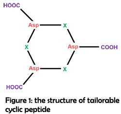
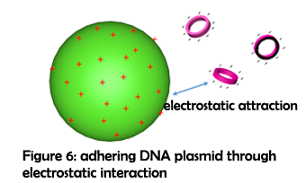

Novel assembling strategies
Our main objective is to construct tailorable cyclic peptide based nano-structure that can be applied to nucleic acid delivery. In order to extend the assembling strategies and make good use of the variety of amino acids, we highlight the roles of cyclic peptide sidechains in the construction of nanostructures. Inspired by the concept of click chemistry1, a cyclic hexa-peptide model with some certain reaction sites has been rationally designed (Figure 1). Three aspartic acid residues are alternately connected in the cyclic peptide, providing three symmetrically arranged carboxyl groups for further two-dimensional (2D) assembling with amino or guanidine terminated linkers. Theoretical studies as well as experiments have shown that such 2D structure will subject to the high surface energy, bending and finally forming vesicles or tubular structures (Figure 2)2.
Tailorable structure for tunable functionalization
Except three aspartic acid residues working as structure-constructing fragment, the other three residues can be substituted with any amino acids according to the desired function (Figure 1). Thus, by tailoring the peptide ring’s structure, the properties of the assemblies can be easily modulated. In this work, two cyclic peptides with such structure have been rationally designed and synthesized to verify the feasibility of our tailorable design.
Previous work has shown that the rigidity of rings greatly influences the assemblies�morphology3. Hence, by tailoring the cyclic peptide’s rigidity, assemblies with different morphologies are likely to be obtained. In this work, Cyclo-(DG)3 and cyclo-(DP)3 were designed to explore how rigidity affect the morphology of assemblies and modulate the morphology (Figure 3). The length of linkers was also tuned from ethylenediamine to hexamethylenediamine to adjust the rigidity of assemblies.
Size-controllable synthesis
The size of assemblies has a significant effect on their functions. The size is governed by a series of factors, such as temperature, solvent, and concentration. Although it is true that by modulating these parameters, assemblies with different sizes can be obtained, there still lacks basic principles to predict under what condition assemblies with desired sizes can be fabricated. Moreover, only several certain sizes of assemblies can be generated using above-mentioned method. Thus, controllable synthesis of a continuous range size of assemblies is still inaccessible.
Here, we propose an easy preorganization method for controllable synthesis of a certain size of assemblies by tuning the preorganization time. The rationale behind this is from the discovery of fusing process while fabricating nanovesicles through electrostatic interaction. During the fusing process, we found that several small vesicles could fuse to form a large assembly. Thus, the size of the assemblies constructed through electrostatic interaction might increase with the elongation of time. After a certain time of preorganization, the assemblies can be solidified by suddenly adding the catalysts to the reaction system, producing assemblies with a certain size distribution.
pH responsive delivery
In order to improve the delivery selectivity, the function of pH-responsive delivery can be incorporated to the assemblies by substituting histidine for glycine. Usually, the acidity in tumor microenvironment is stronger than it in normal tissue due to the rapid metabolism of tumor cells6. As a consequence, the protonation extent of histidine side chain increases significantly at tumor tissue (see calculation), which facilitate the intracellular delivery of nucleic acid to the cancer cells.
Another barrier over nucleic acid delivery is endosome entrapment. If the nucleic acid cannot escape from the endosome, it will finally subject to enzymatic degradation, leading to the inefficiency of the delivery4, 5. However, triggered by the acidic environment, the protonation of histidine side chains can be further improved. Thus, the vesicles are positive enough to create pores in lipid membrane, which promotes the endosome escape.
The percentage of protonated His (positively charged) is shown in the table below.
| pH | 7.4 | 6.8 | 5.0 |
| Percentage | 3.8% | 13.60% | 90.91% |
Applications in nucleic acid delivery
Since nucleic acid are negatively charged in physiological condition, they can adhere to positive carriers through electrostatic interaction. By mixing the cyclic peptide with excess amount of hexamethylenediamine, defected areas with unreacted amino groups are expected to exist in the surface of the vesicles. These free amino groups are mostly protonated in physiological condition, endowing the assemblies with potential to adhere nucleic acids and penetrate cell membrane. Therefore, the assemblies constructed in this fashion may be useful for a wide range of therapeutic application.
REFERENCES
1.  Kolb, H. C.; Finn, M. G.; Sharpless, K. B., Click chemistry: Diverse chemical function from a few good reactions. Angewandte Chemie-International Edition 2001, 40 (11), 2004-2021.
2.  Han, M.; Sim, E., Formation of Tubular Scrolls with Controlled Internal Cavity. Journal of Physical Chemistry B 2012, 116 (6), 1796-1801.
3.  Baek, K.; Yun, G.; Kim, Y.; Kim, D.; Hota, R.; Hwang, I.; Xu, D.; Ko, Y. H.; Gu, G. H.; Suh, J. H.; Park, C. G.; Sung, B. J.; Kim, K., Free-Standing, Single-Monomer-Thick Two-Dimensional Polymers through Covalent Self-Assembly in Solution. Journal of the American Chemical Society 2013, 135 (17), 6523-6528.
4.   Varkouhi, A. K.; Scholte, M.; Storm, G.; Haisma, H. J., Endosomal escape pathways for delivery of biologicals. Journal of Controlled Release 2011, 151 (3), 220-228.
5.   Panyam, J.; Labhasetwar, V., Biodegradable nanoparticles for drug and gene delivery to cells and tissue. Advanced Drug Delivery Reviews 2003, 55 (3), 329-347.
6.   Cheng, H.; Zhu, J.-Y.; Xu, X.-D.; Qiu, W.-X.; Lei, Q.; Han, K.; Cheng, Y.-J.; Zhang, X.-Z., Activable Cell-Penetrating Peptide Conjugated Prodrug for Tumor Targeted Drug Delivery. ACS Applied Materials & Interfaces 2015, 7 (29), 16061-16069.